古民家リフォーム費用予測・プラン資料
対象: 約200平方メートルの古民家 / 和室累計30畳・5部屋、水回り、土間、土壁、廊下、共通工事
価格基準: 2025年時点の公開相場と実務レンジを基準にした概算
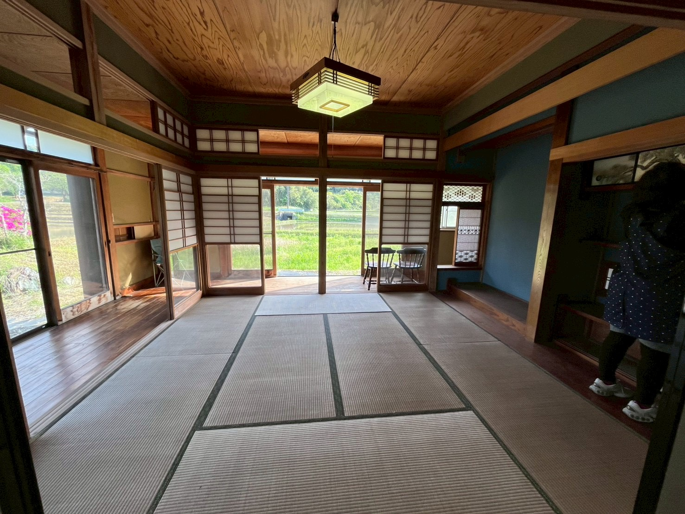
1. 結論
限定改修・最低限
350万〜700万円
限定改修・標準
600万〜1,200万円
限定改修・上位
900万〜1,600万円
200平方メートル フルリノベ
2,000万〜4,000万円
- 今回の限定改修は、設備・内装中心なら 600万〜1,200万円 を基準予算に置く。
- 200平方メートル全体をフルリノベーションする場合は、10万〜20万円/平方メートルを当てると 2,000万〜4,000万円 規模。
- 最短の進め方は、最低限・標準・上位・最上位フルリノベの4段階で比較し、予算と目的に合う列を選ぶこと。
推奨判断: 予算が1,500万円未満なら限定改修。2,000万円以上を投下できるなら、耐震・断熱・配線・給排水を含む全体計画に切り替える。
参考URL:
- フルリノベ単価参考 https://www.reform-guide.jp/topics/danchi-renovation/
- 古民家の追加工事リスク https://hapisumu.jp/category/seismic-reform/20398/
- 古民家リフォーム部位別相場 https://www.reform-guide.jp/topics/kominnka-reform/
2. 試算前提
- 和室30畳は約49平方メートルとして試算。
- 玄関土間、作業部屋土間、ボイラー室土間、廊下、土壁面積は未確定のため、平方メートル単価または一式レンジで提示。
- 材料費と工賃は、公開相場に内訳がない項目では実務上の分解値として提示。確定見積では現地調査が必須。
- 古民家は下地腐食、床組、配管、配線、基礎で追加費用が発生しやすいため、10%〜25%の予備費を別枠で確保する。
3. 図面から読み取れる追加条件
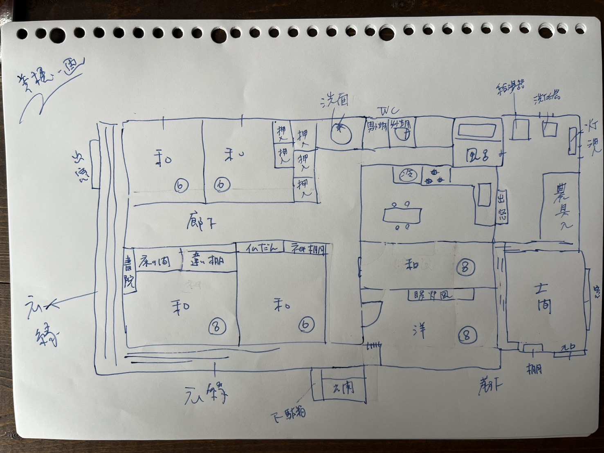
- 水回りは右上側に集中。キッチン、風呂、トイレ、洗面、給湯・ボイラー系統が近接しているため、配管更新は一体見積が合理的。
- 土間・倉庫・ボイラー室が右側にまとまっている。土間面積は現地実測で確定すべきだが、施工範囲を分けて見積依頼しやすい。
- 和室は6畳・8畳表記が複数あり、既存試算の「和室累計30畳」と整合する。畳、壁、天井、建具は部屋単位で優先順位を付けられる。
- 廊下が玄関から和室・水回りへつながる主要動線。床鳴り、沈み、段差、建具干渉を現地確認する価値が高い。
- 図面は手書きのため寸法精度は未確定。業者見積では、図面画像と現地写真をセットで渡し、実測後に数量を確定する。
見積依頼時の伝え方: 「水回り一式」「和室群」「土間・ボイラー室」「廊下・動線」「基礎・床組」の5区分で見積を分けると比較しやすい。
4. 4段階プラン
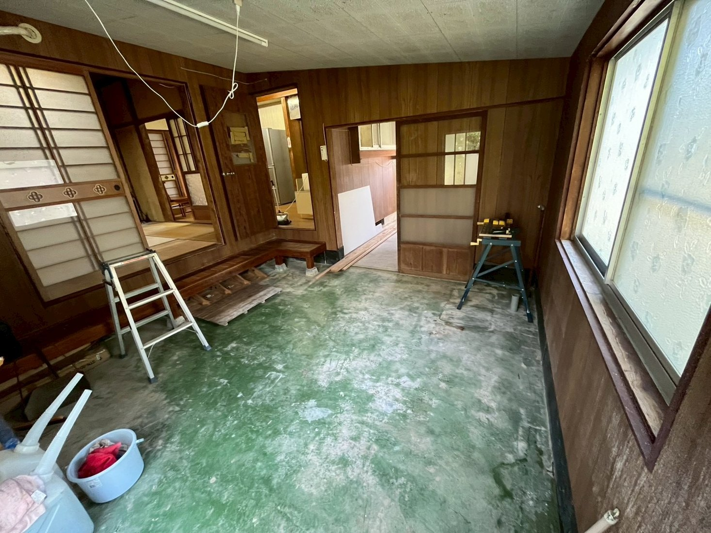
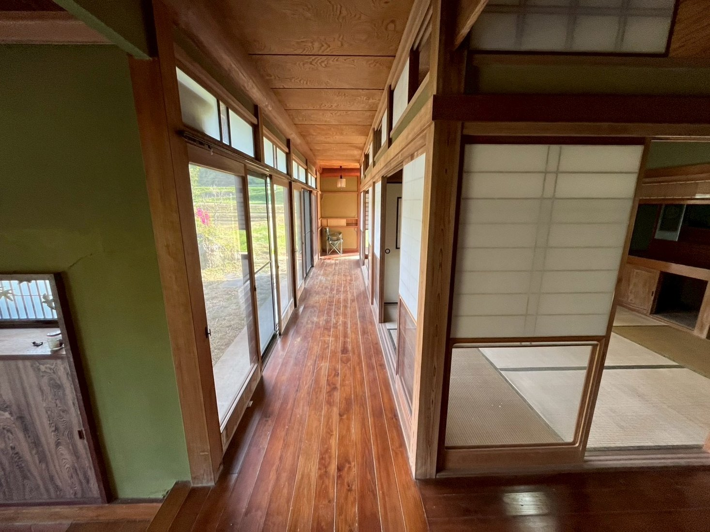
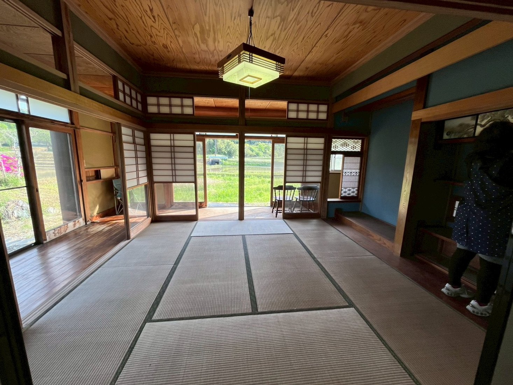
| プラン | 総額目安 | 実施範囲 | 向いている判断 |
|---|---|---|---|
| 最低限 | 350万〜700万円 | 劣化箇所の補修、水回りの最低限更新、和室・土間・廊下の部分補修、予備費を限定的に確保。 | 短期的に住める状態を作る。資産価値向上より初期費用圧縮を優先。 |
| 標準 | 600万〜1,200万円 | キッチン・風呂・トイレを標準更新。和室、土壁、廊下、土間を主要範囲で更新。配線・給排水の一部更新。 | 今回条件で最も現実的な基準案。生活品質と費用のバランスを取る。 |
| 上位 | 900万〜1,600万円 | 水回り上位グレード、和室・土壁・廊下・土間の広範囲更新、給湯器・配線・基礎補強の一部まで実施。 | 古民家の質感を残しながら快適性を高める。限定改修の上限案。 |
| 最上位 フルリノベ |
2,000万〜4,000万円 10万〜20万円/平方メートル |
200平方メートル全体を対象。水回り、全室内装、床・壁・天井、電気・給排水・給湯、断熱、耐震、基礎、外部改修の一部を含む。 | 長期居住、二拠点、宿泊、資産化を想定。後戻り工事を減らし、建物全体を再生する。 |
| 工事項目 | 最低限 | 標準 | 上位 | 最上位フルリノベ |
|---|---|---|---|---|
| 水回り | 110万〜220万円 | 200万〜350万円 | 320万〜520万円 | 500万〜1,000万円 |
| 和室・内装・建具 | 110万〜180万円 | 180万〜320万円 | 250万〜450万円 | 700万〜1,300万円 |
| 土間・廊下・床 | 70万〜118万円 | 80万〜138万円 | 120万〜220万円 | 400万〜900万円 |
| 電気・給排水・給湯 | 30万〜80万円 | 80万〜200万円 | 150万〜300万円 | 500万〜850万円 |
| 断熱・耐震・基礎 | 0万〜80万円 | 50万〜200万円 | 100万〜300万円 | 500万〜1,400万円 |
| 設計・管理・予備費 | 40万〜110万円 | 70万〜190万円 | 130万〜310万円 | 400万〜650万円 |
| 合計 | 350万〜700万円 | 600万〜1,200万円 | 900万〜1,600万円 | 2,000万〜4,000万円 |
フルリノベでは「内装の見た目」より、耐震・断熱・配線・給排水を先に予算化する。ここを削ると、後から壊して直す二重工事になりやすい。
参考URL:
- フルリノベ単価参考 https://www.reform-guide.jp/topics/danchi-renovation/
- 基礎補強 https://hapisumu.jp/category/seismic-reform/20398/
- 古民家リフォーム部位別相場 https://www.reform-guide.jp/topics/kominnka-reform/
5. 項目別費用予測
和室 30畳・5部屋
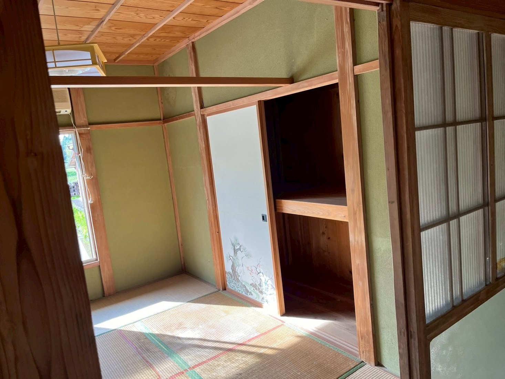
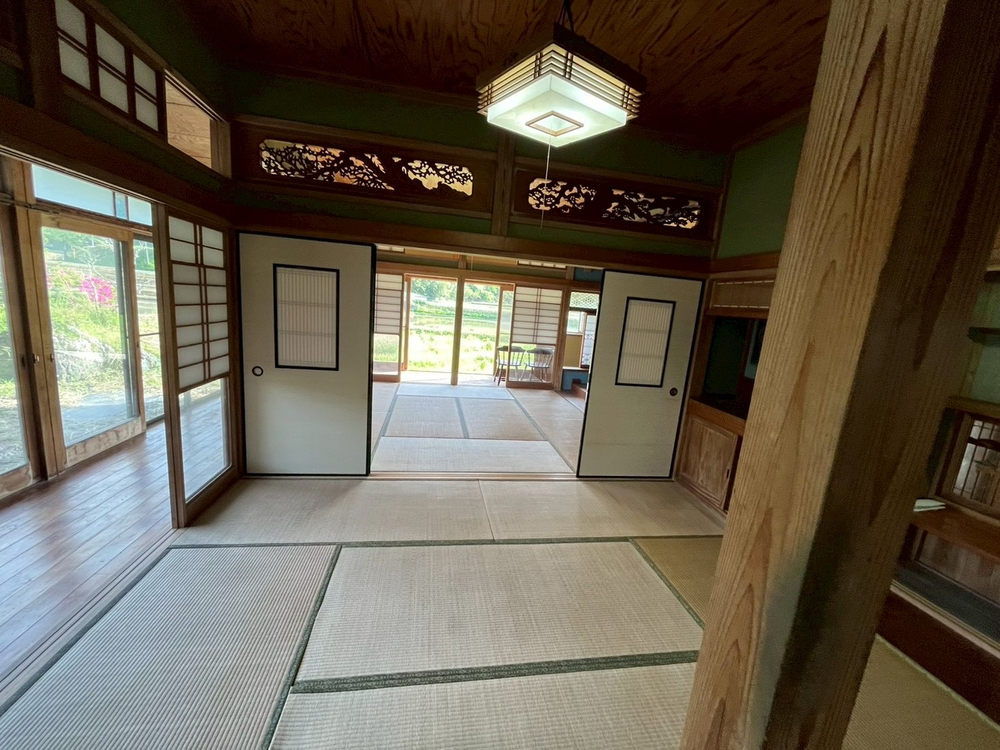
| 項目 | 選択肢 | 概算費用 | 材料費・工賃の目安 | 根拠・単価 |
|---|---|---|---|---|
| 畳 | 最低限 | 30万〜60万円 | 材料15万〜35万円 / 工賃15万〜25万円 | 表替え1畳約1万円前後。6畳7万〜12万円を30畳換算。 |
| 畳 | 標準 | 35万〜60万円 | 材料20万〜40万円 / 工賃15万〜20万円 | 標準的な新調。 |
| 畳 | 上位 | 60万〜100万円 | 材料40万〜75万円 / 工賃20万〜25万円 | 和紙畳・高級い草。 |
| 壁 | 最低限 | 60万〜75万円 | 材料15万〜25万円 / 工賃45万〜50万円 | 砂壁塗り直し約12万円、珪藻土約15万円を5部屋換算。 |
| 壁 | 標準 | 75万〜120万円 | 材料20万〜40万円 / 工賃55万〜80万円 | 塗壁からクロス化は6畳約15万円から。下地処理が必要。 |
| 壁 | 上位 | 50万〜150万円 | 材料20万〜70万円 / 工賃30万〜80万円 | 自然素材仕上げは6〜8畳で10万〜30万円。 |
| 天井 | 最低限 | 17.5万〜42.5万円 | 材料5万〜15万円 / 工賃12.5万〜27.5万円 | 天井塗装6畳3.5万〜8.5万円を5部屋換算。 |
| 天井 | 標準 | 45万〜170万円 | 材料20万〜90万円 / 工賃25万〜80万円 | 和室6畳の天井張替え9万〜34万円を5部屋換算。 |
| 建具 | 補修・張替え | 10万〜25万円 | 材料5万〜15万円 / 工賃5万〜10万円 | 襖・障子は枚数課金。襖1枚約6,000円の事例あり。 |
| 和室合計 | 最低限〜上位 | 110万〜450万円 | 選択肢ごとに加算 | 畳・壁・天井・建具の積上げ。 |
参考URL:
- 畳 https://suzukitatami.com/20250909_13074/
- 全体費用 https://www.reform-guide.jp/zentai-hiyou/
- 和室壁 https://hapisumu.jp/category/japanese-reform/17444/
- 自然素材 https://hapisumu.jp/category/japanese-reform/29199/
- 天井 https://www.reform-guide.jp/topics/tenjou-reform/
- 襖 https://curama.jp/fusuma/osaka/37/3/
キッチン
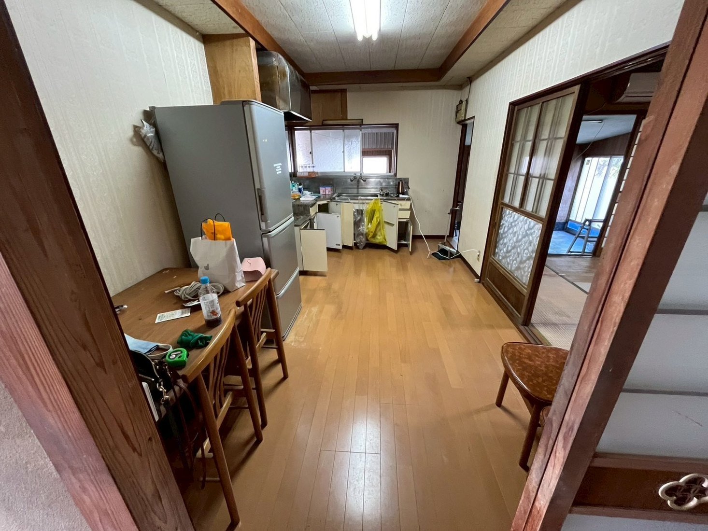
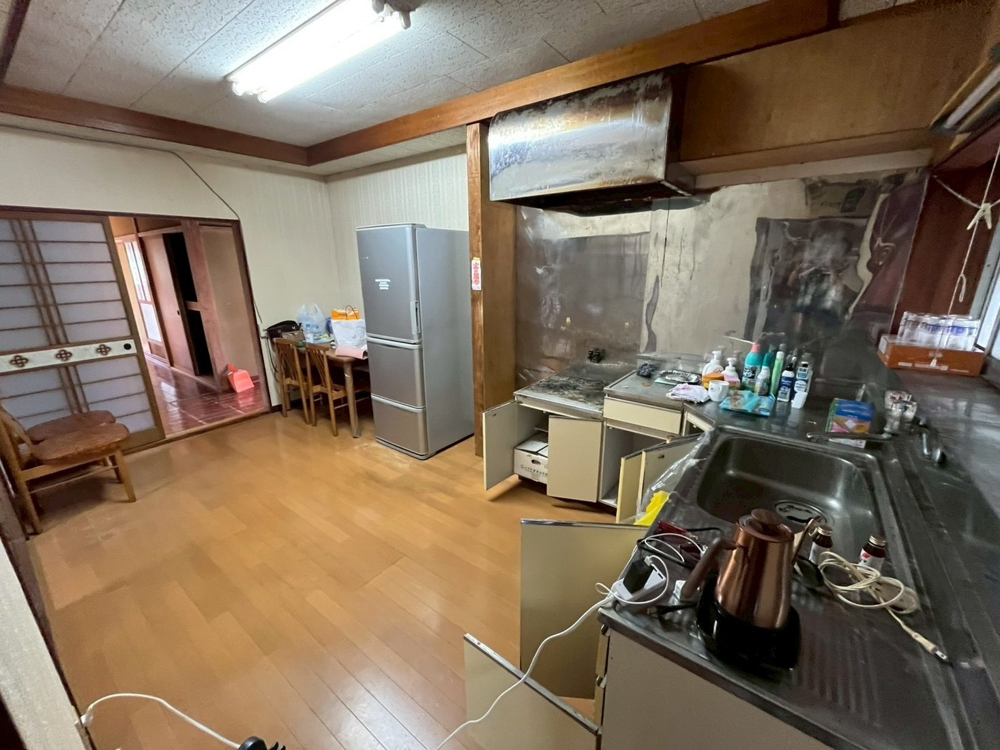
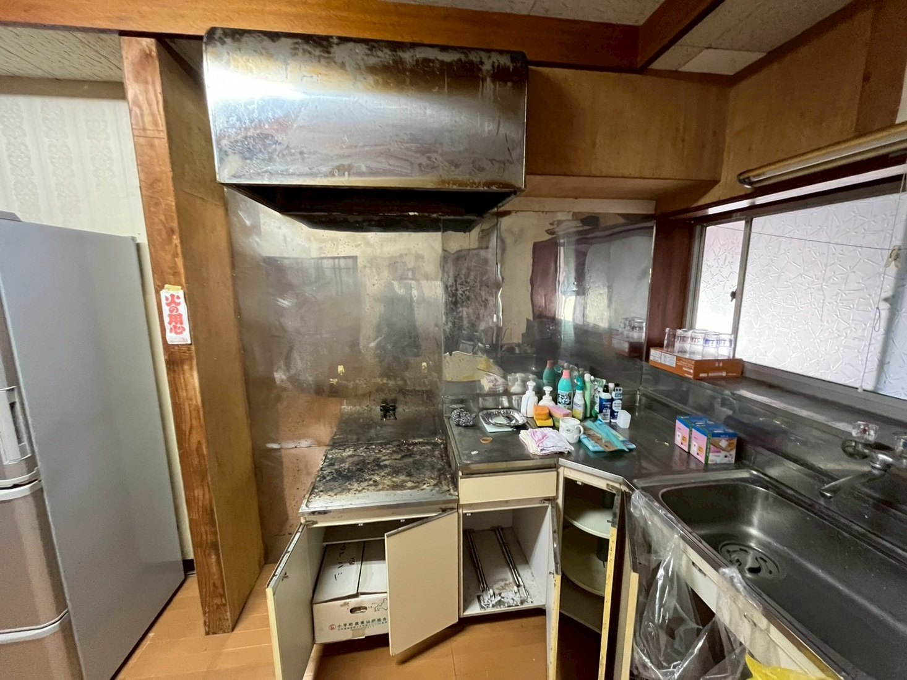
| 選択肢 | 概算費用 | 材料費・工賃の目安 | 根拠・単価 |
|---|---|---|---|
| 最低限 | 5万〜20万円 | 材料3万〜12万円 / 工賃2万〜8万円 | 水栓、換気扇、コンロ、クリーニング、部分補修中心。 |
| 標準 | 80万〜150万円 | 本体40万〜90万円 / 工事40万〜60万円 | 既存位置のままシステムキッチン交換。古民家では給排水・電気・床壁復旧で上振れしやすい。 |
| 上位 | 150万〜280万円 | 本体80万〜180万円 / 工事70万〜100万円 | 対面化・位置変更・配管延長・床壁復旧が発生。 |
参考URL:
- キッチン相場 https://suumo.jp/remodel/soba/rk_kitchen/
- 古民家リフォーム部位別相場 https://www.reform-guide.jp/topics/kominnka-reform/
風呂
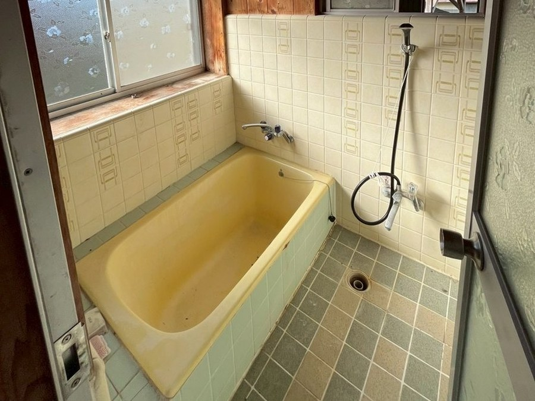
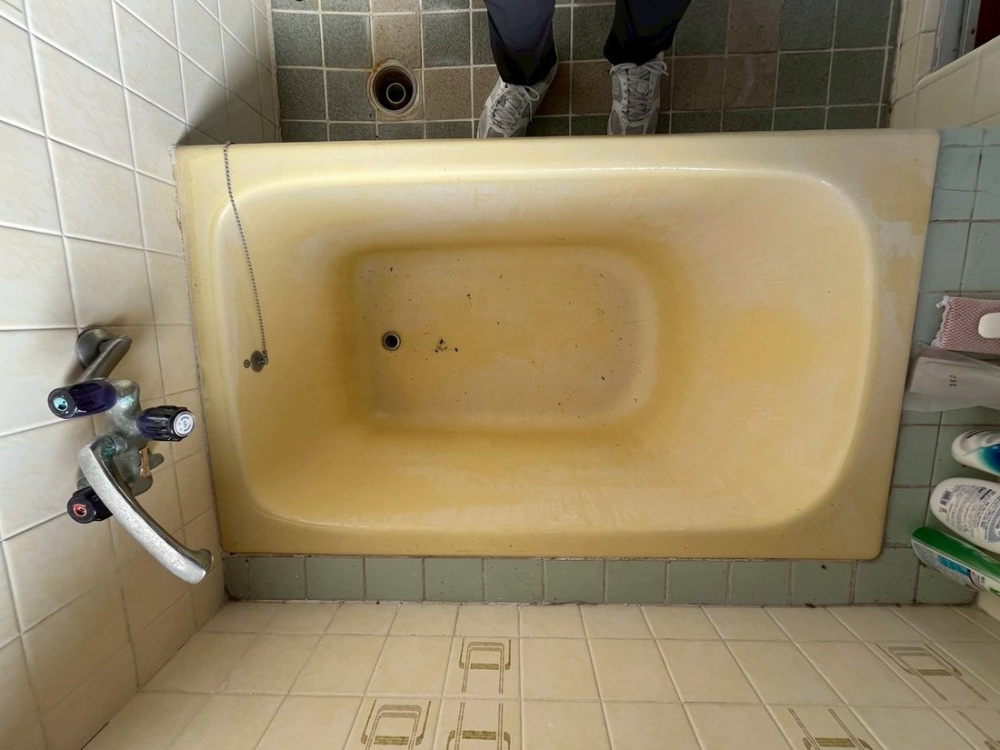
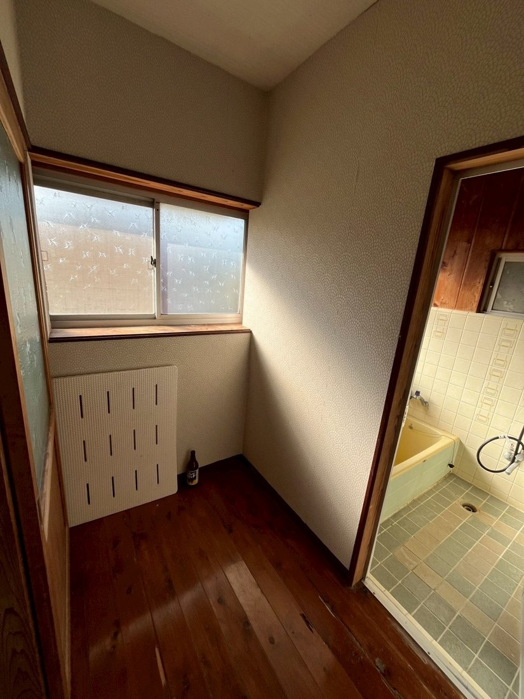
| 選択肢 | 概算費用 | 材料費・工賃の目安 | 根拠・単価 |
|---|---|---|---|
| 最低限 | 15万〜55万円 | 材料8万〜35万円 / 工賃7万〜20万円 | 浴槽交換のみ。ホーロー再生は参考扱い。 |
| 標準 | 100万〜150万円 | 本体50万〜90万円 / 工事50万〜60万円 | 在来浴室からユニットバス化を想定。古民家では解体、配管、土台補修が乗りやすい。 |
| 上位 | 150万〜220万円 | 本体80万〜140万円 / 工事70万〜80万円 | 断熱、窓、在来浴室改修、土台補修を含む場合。 |
参考URL:
- 浴室リフォーム参考 https://jp.toto.com/reform/library/neue/article27/
- 古民家浴室相場 https://www.reform-guide.jp/topics/kominnka-reform/
トイレ
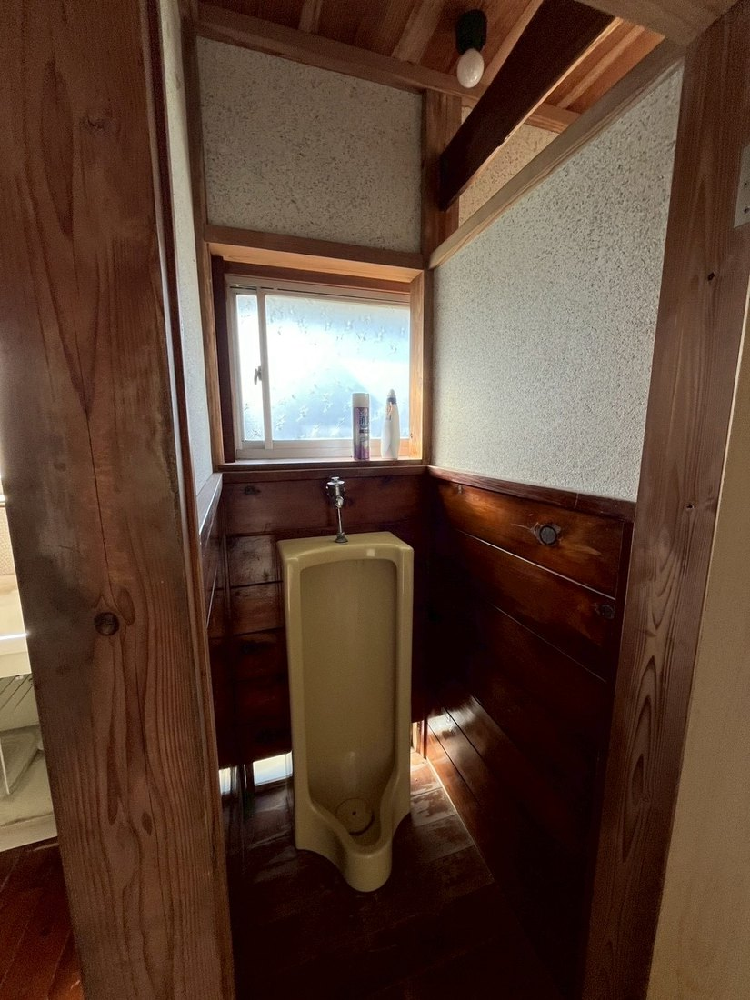
| 選択肢 | 概算費用 | 材料費・工賃の目安 | 根拠・単価 |
|---|---|---|---|
| 最低限A | 3万〜10万円 | 温水洗浄便座2万〜8万円 / 工賃1万〜2万円 | 温水洗浄便座、いわゆるウォシュレット等の取付。既存便器・配管・床を触らない前提。 |
| 最低限B | 12万〜20万円 | 便器8万〜15万円 / 工賃4万〜5万円 | 便器交換のみ。内装や配管移設は含まない。 |
| 標準 | 30万〜60万円 | 便器10万〜30万円 / 工事20万〜30万円 | 便器交換＋内装張替え。水まわり全体相場では30万〜60万円が目安。 |
| 洋式化 | 30万〜60万円 | 便器10万〜25万円 / 工事20万〜35万円 | 和式から洋式化。配管・床条件で変動。 |
参考URL:
- トイレ交換・洋式化 https://www.reform-guide.jp/zentai-hiyou/
- 水まわり費用目安 https://jp.toto.com/reform/library/neue/article27/
土間 玄関・作業部屋・ボイラー室
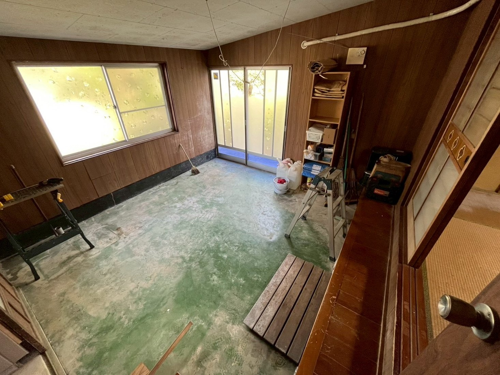
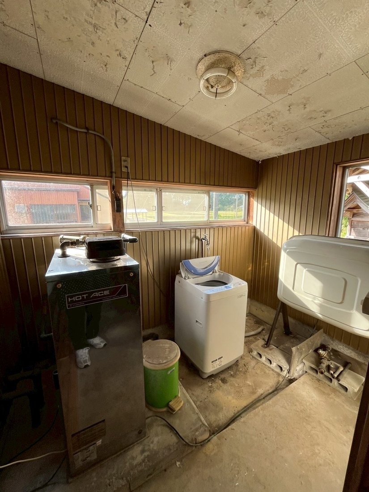
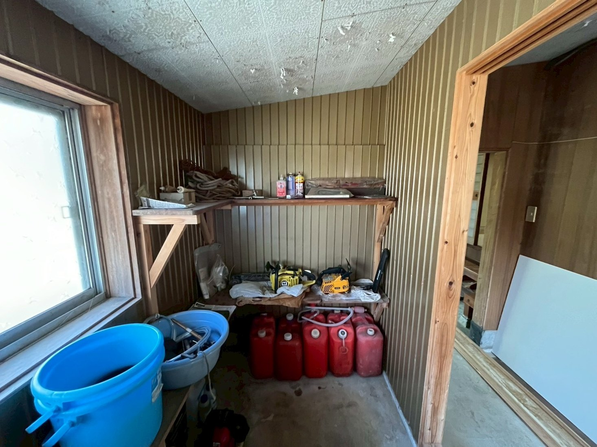
| 選択肢 | 概算費用 | 材料費・工賃の目安 | 根拠・単価 |
|---|---|---|---|
| 最低限 | 0.5万〜1.5万円/平方メートル | 材料0.2万〜0.5万円 / 工賃0.3万〜1.0万円 | ひび補修、簡易研磨、部分補修。 |
| 標準 | 2万〜3万円/平方メートル | 材料0.7万〜1.2万円 / 工賃1.3万〜1.8万円 | モルタル仕上げの相場。 |
| 上位 | 3万〜5万円/平方メートル | 材料1.2万〜2.5万円 / 工賃1.8万〜2.5万円 | 下地調整、意匠仕上げ、防湿処理を含む場合。 |
| 上がり框 | 2万〜6万円 | 材料1万〜4万円 / 工賃1万〜2万円 | 交換一式。参考レンジ。 |
| 例示 | 50万〜78万円 | 24平方メートル想定 | 玄関8平方メートル、作業部屋12平方メートル、ボイラー室4平方メートルの場合。 |
参考URL:
- モルタル施工単価 https://hapisumu.jp/category/exterior-reform/35799/
- 玄関土間 https://hapisumu.jp/category/entrance-reform/2441/
土壁
| 選択肢 | 概算費用 | 材料費・工賃の目安 | 根拠・単価 |
|---|---|---|---|
| 最低限 | 12万〜15万円/6畳 | 材料3万〜6万円 / 工賃9万円前後 | 砂壁塗り直し約12万円、珪藻土約15万円。 |
| 標準 | 15万円〜/6畳 | 材料5万〜8万円 / 工賃10万円〜 | 石膏ボード下地＋クロス化。クロス単体は1,000〜1,200円/平方メートル。 |
| 上位 | 10万〜30万円/6〜8畳 | 材料4万〜15万円 / 工賃6万〜15万円 | 珪藻土・自然素材仕上げ。仕上げ材と左官面積で変動。 |
参考URL:
- 土壁・和室壁 https://hapisumu.jp/category/japanese-reform/17444/
- 自然素材仕上げ https://hapisumu.jp/category/japanese-reform/29199/
廊下
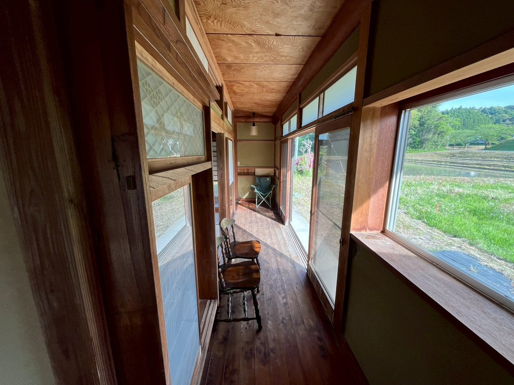
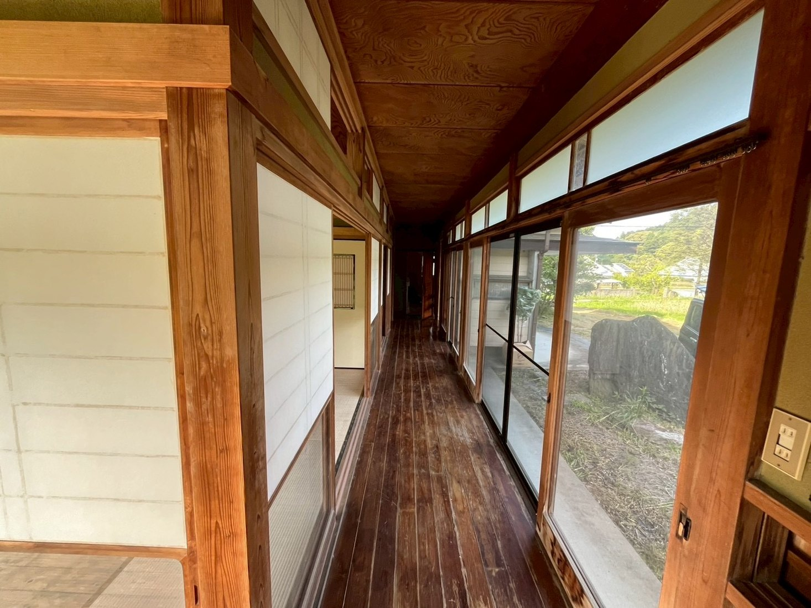
| 選択肢 | 概算費用 | 材料費・工賃の目安 | 根拠・単価 |
|---|---|---|---|
| 最低限 | 5万〜15万円/6畳相当 | 材料2万〜6万円 / 工賃3万〜9万円 | 床部分補修、壁クロス張替え、天井塗装。 |
| 標準 | 27万〜48万円/6畳相当 | 材料10万〜25万円 / 工賃17万〜23万円 | フローリング化18万〜25万円、壁クロス5万〜15万円、天井3.5万〜8.5万円。 |
| 上位 | 50万〜100万円 | 材料25万〜65万円 / 工賃25万〜35万円 | 無垢床、板張り天井、下地補修を含む場合。 |
参考URL:
- クロス張替え https://www.reform-guide.jp/topics/cross-harikae-tanka/
- 天井 https://www.reform-guide.jp/topics/tenjou-reform/
- 全体費用 https://www.reform-guide.jp/zentai-hiyou/
その他 共通工事
| 項目 | 概算費用 | 材料費・工賃の目安 | 根拠・判断軸 |
|---|---|---|---|
| 給湯器・ボイラー | 20万〜50万円 | 本体12万〜35万円 / 工事8万〜15万円 | 石油ボイラー等は機種と配管条件で変動。参考レンジ。 |
| 電気配線 | 10万〜100万円超 | 材料3万〜35万円 / 工賃7万〜65万円超 | 最低限はスイッチ・コンセント更新。標準は回路増設、分電盤、主要配線更新。 |
| 基礎補強 | 40万〜70万円 | 材料15万〜30万円 / 工賃25万〜40万円 | 炭素繊維シート等による住宅全体補強の目安。 |
| 基礎増打ち | 4万〜6万円/平方メートル | 材料1.5万〜2.5万円 / 工賃2.5万〜3.5万円 | 一般的な広さで約50万円の事例。対象面積で変動。 |
| 予備費 | 工事費の10%〜25% | 不確定費用 | 下地腐食、シロアリ、雨漏り、給排水、床組補修の追加に備える。 |
参考URL:
- 基礎補強 https://hapisumu.jp/category/seismic-reform/20398/
6. 合算モデル
| 項目 | 最低限 | 標準 | 上位 | 最上位フルリノベ |
|---|---|---|---|---|
| 和室・内装・建具 | 110万〜180万円 | 180万〜320万円 | 250万〜450万円 | 700万〜1,300万円 |
| キッチン | 80万〜120万円 | 80万〜150万円 | 150万〜280万円 | 250万〜500万円 |
| 風呂 | 15万〜55万円 | 100万〜150万円 | 150万〜220万円 | 180万〜350万円 |
| トイレ | 3万〜20万円 | 30万〜60万円 | 30万〜60万円 | 70万〜150万円 |
| 土間・廊下・床 | 70万〜118万円 | 80万〜138万円 | 120万〜220万円 | 400万〜900万円 |
| 給湯器・配線・給排水 | 30万〜80万円 | 80万〜200万円 | 150万〜300万円 | 500万〜850万円 |
| 断熱・耐震・基礎・外部 | 0万〜80万円 | 50万〜200万円 | 100万〜300万円 | 500万〜1,400万円 |
| 設計・管理・予備費 | 40万〜110万円 | 70万〜190万円 | 130万〜310万円 | 400万〜650万円 |
| 総額目安 | 350万〜700万円 | 600万〜1,200万円 | 900万〜1,600万円 | 2,000万〜4,000万円 |
参考URL:
- 各項目の参考URLは上記パート末尾に記載。
7. 優先順位
- 第1優先: 給排水、電気配線、基礎、雨漏り、シロアリの点検。
- 第2優先: 風呂と給湯器。漏水・寒さ・故障時の生活影響が大きい。
- 第3優先: キッチンとトイレ。日常使用頻度が高く、交換効果が明確。
- 第4優先: 和室、土壁、廊下、土間。部屋単位・面積単位で段階施工しやすい。
予算圧縮策: 和室は5部屋すべて同時に触らず、使用頻度の高い部屋から畳・壁・天井を順に実施する。
8. 未確定項目
- 玄関土間、作業部屋、ボイラー室、廊下の実測面積。
- 襖・障子の枚数。
- キッチンのサイズ、グレード、レイアウト変更有無。
- 風呂の現況寸法、在来浴室かユニットバスか、給湯設備の更新要否。
- 配線、給排水、基礎、シロアリ、雨漏り、床組腐食の有無。